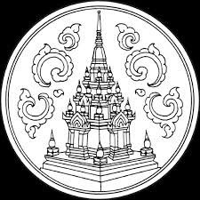

>
ประวัติความเป็นมา

จังหวัดสุราษฎร์ธานี มักจะเรียกกันด้วยชื่อสั้น ๆ ว่า "สุราษฎร์" ใช้อักษรย่อ "สฎ"
เป็นจังหวัดในภาคใต้ตอนบน
มีพื้นที่ขนาดใหญ่เป็นอันดับ 6 ของประเทศ และมีประชากรหนาแน่นอันดับ 64 ของประเทศ
นับเป็นจังหวัดหนึ่งที่มีประวัติศาสตร์ยาวนาน มีหลักฐานทั้งประวัติศาสตร์และโบราณคดีเก่าแก่
และยังมีแหล่งท่องเที่ยวและอุทยานแห่งชาติหลายแห่ง
จังหวัดสุราษฎร์ธานี ตั้งอยู่ในฝั่งตะวันออกของภาคใต้ โดยมีสภาพภูมิประเทศที่หลายหลายทั้งที่ราบสูง
ภูมิประเทศแบบภูเขา รวมทั้งที่ราบชายฝั่ง มีพื้นที่ครอบคลุมถึงในบริเวณอ่าวไทย ทั้งบริเวณที่เป็นทะเลและเป็นเกาะ
เกาะในพื้นที่จังหวัดสุราษฎร์มีทั้งขนาดใหญ่และขนาดเล็ก เกาะขนาดใหญ่เป็นที่รู้จักเช่นเกาะสมุย เกาะพะงัน
และหมู่เกาะอ่างทอง เนื่องจากทำเลที่ตั้งจึงได้รับอิทธิพลจากมรสุมตะวันตกเฉียงใต้
ซึ่งเกิดบริเวณทะเลอันดามันบ้างเป็นครั้งคราวเนื่องจากจะมีแนวเทือกเขาตะนาวศรี เทือกเขาภูเก็ต
และเทือกเขานครศรีธรรมราช แถบบริเวณจังหวัดระนอง จังหวัดชุมพร จังหวัดพังงา จังหวัดภูเก็ต
และจังหวัดนครศรีธรรมราช เป็นแนวช่วยลดอิทธิพลของลมมรสุมดังกล่าว
ในทางกลับกันพื้นที่จังหวัดสุราษฎร์ธานีจะได้รับอิทธิพลจากมรสุมตะวันออกเฉียงเหนือเป็นส่วนใหญ่
มรสุมตะวันออกเฉียงเหนือปกติจะมีแหล่งกำเนิดบริเวณทะเลจีนใต้และอ่าวไทย
ทำให้จังหวัดสุราษฎร์ธานีมีช่วงฤดูฝนกินระยะเวลาตั้งแต่เดือนตุลาคมจนถึงเดือนมกราคม
> ประชากรส่วนใหญ่นับถือศาสนาพุทธ โดยประกอบอาชีพทางด้านการเกษตรเป็นหลัก
โดยใช้พิ้นที่ในการทำการเกษตรประมาณร้อยละ 45 ของพื้นที่ทั้งหมด นอกจากนี้ ยังประกอบอาชีพทางด้านปศุสัตว์ ประมง
อุตสาหกรรม รวมทั้งมีการทำเหมืองแร่ด้วย
ส่วนการเดินทางมายังจังหวัดสุราษฎร์ธานีสามารถใช้ได้หลายเส้นทาง ทั้งทางรถไฟ เครื่องบิน
รถโดยสารประจำทาง เรือ
และรถยนต์ส่วนบุคคล
สถานที่สำคัญภายในจังหวัดนั้น มีทั้งแหล่งโบราณสถาน เช่น พระบรมธาตุไชยา พระธาตุศรีสุราษฎร์
พิพิธภัณฑสถานแห่งชาติไชยา ซากเมืองโบราณสมัยอาณาจักรศรีวิชัย แหล่งท่องเที่ยวทางธรรมชาติ ได้แก่
อุทยานแห่งชาติทั้งอุทยานแห่งชาติทางบก และอุทยานแห่งชาติทางทะเล น้ำตก เกาะ แม่น้ำ เขื่อน วัด และพระอารามหลวง
เป็นต้นและยังเป็นแหล่งสืบสานประเพณีที่สำคัญของชาวใต้ คือประเพณีชักพระ
ทอดผ้าป่าและแข่งขันเรือยาวชิงถ้วยพระราชทานอีกด้วย
span>
นอกจากนี้ ยังมีผลิตผล และผลิตภัณฑ์ทางการเกษตรที่เป็นที่รู้จัก เช่น ไข่เค็มไชยา หอยนางรม
และเงาะโรงเรียน
ดังที่ปรากฏในคำขวัญของจังหวัด
ประวัติศาสตร์
จังหวัดสุราษฎร์ธานี เป็นที่ตั้งของเมืองเก่า เป็นศูนย์กลางของเมืองศรีวิชัย
มีหลักฐานแสดงถึงการตั้งรกรากและเส้นทางสายไหมในอดีต
พื้นที่อ่าวบ้านดอนเจริญขึ้นจนเป็นอาณาจักรศรีวิชัยในช่วงหลังพุทธศตวรรษที่ 13
โดยมีหลักฐานทางประวัติศาสตร์เป็นเครื่องยืนยันความรุ่งเรืองในอดีต ภายหลังยังเชื่อว่า
เมื่ออาณาจักรตามพรลิงก์หรือเมืองนครศรีธรรมราชมีความรุ่งเรืองมากขึ้นนั้น
เมืองไชยาก็เป็นหนึ่งในเมืองสิบสองนักษัตรของเมืองนครศรีธรรมราชด้วย ชื่อว่า "เมืองบันไทยสมอ"span>
นอกจากนี้ในยุคใกล้เคียงกันนั้นยังพบความเจริญของเมืองที่เกิดขึ้นในบริเวณลุ่มแม่น้ำตาปี ได้แก่
เมืองเวียงสระ
เมืองคีรีรัฐนิคม และเมืองท่าทอง โดยเชื่อว่าเจ้าศรีธรรมาโศก
ผู้ครองเมืองนครศรีธรรมราชนั้นอพยพย้ายเมืองมาจากเมืองเวียงสระ เนื่องจากเป็นเมืองที่ไม่มีทางออกสู่ทะเล
รวมทั้งเกิดโรคภัยระบาด และเมื่อเมืองนครศรีธรรมราชเจริญรุ่งเรืองนั้น ได้ยกเมืองไชยา และเมืองท่าทอง
เป็นเมืองสิบสองนักษัตรของตนด้วยspan>
ในรัชสมัยพระบาทสมเด็จพระนั่งเกล้าเจ้าอยู่หัวทรงโปรดเกล้าฯ
ให้ก่อตั้งอู่เรื่อพระที่นั่งและเรือรบเพื่อใช้ในราชการที่อ่าวบ้านดอน
ต่อมาในรัชสมัยพระบาทสมเด็จพระจอมเกล้าเจ้าอยู่หัว ทรงให้ย้ายที่ตั้งเมืองท่าทองมายังอ่าวบ้านดอน
(ซึ่งเป็นที่ตั้งของอำเภอเมืองสุราษฎร์ธานีในปัจจุบัน) พร้อมทั้งยกฐานะให้เป็นเมืองจัตวา
ขึ้นตรงต่อกรุงเทพมหานคร และพระราชทานชื่อว่า "เมืองกาญจนดิษฐ์"
โดยแต่งตั้งให้พระยากาญจนดิษฐ์บดีเป็นเจ้าเมืองดูแลการปกครอง span>
ในรัชสมัยพระบาทสมเด็จพระจุลจอมเกล้าเจ้าอยู่หัวได้ทรงโปรดเกล้าฯ ให้รวมเมืองกาญจนดิษฐ์
เมืองคีรีรัฐนิคม
และเมืองไชยาเป็นเมืองเดียวกัน เรียกว่า "เมืองไชยา" ภายใต้สังกัดมณฑลชุมพร
เมื่อเมืองขยายใหญ่ขึ้น จึงมีการปรับเปลี่ยนการปกครองและขยายเมืองออกไป มีการสร้างเมืองใหม่ขึ้นที่
อ่าวบ้านดอน
ให้ชื่อเมืองใหม่ว่า อำเภอไชยา และให้ชื่อเมื่องเก่าว่า "อำเภอพุมเรียง"
แต่เนื่องด้วยประชาชนยังติดเรียกชื่อเมืองเก่าว่า "อำเภอไชยา" ด้วยเหตุนี้ พระบาทสมเด็จพระมงกุฎเกล้าเจ้าอยู่หัว
จึงทรงพระราชทานนามเมืองใหม่ที่บ้านดอนว่า "สุราษฎร์ธานี" และให้ชื่อเมืองเก่าว่า "อำเภอไชยา"
และทรงพระราชทานนามแม่น้ำตาปี ให้ในคราวเดียวกันนั้นเอง
ซึ่งเป็นการตั้งชื่อตามแบบเมืองและแม่น้ำในประเทศอินเดียที่มีแม่น้ำตาปติไหลลงสู่ทะเลออกผ่านปากอ่าวที่เมืองสุรัฎร์